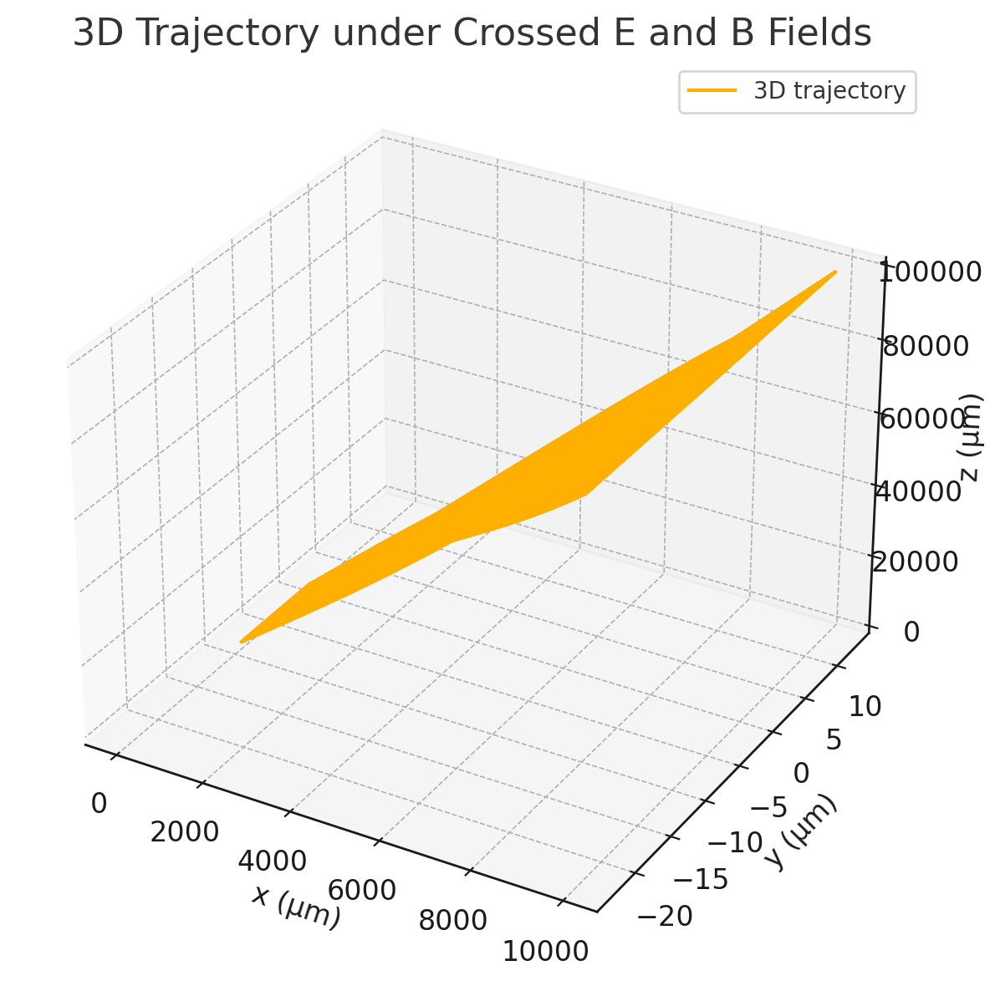
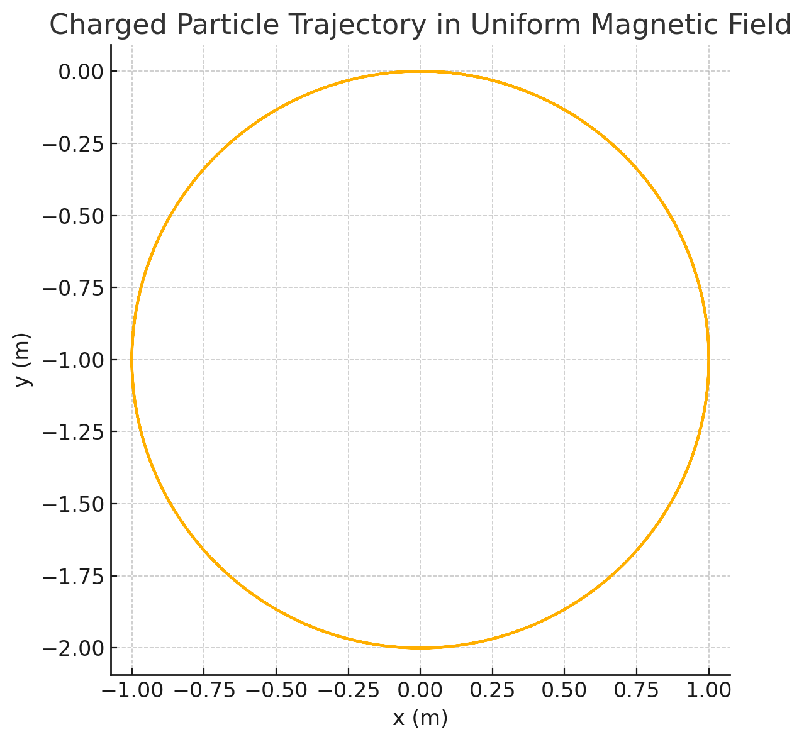
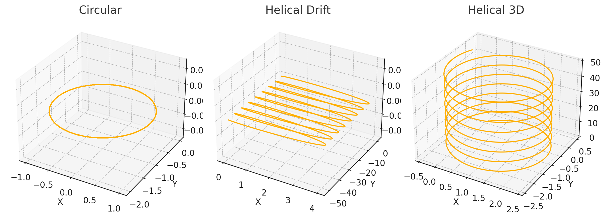
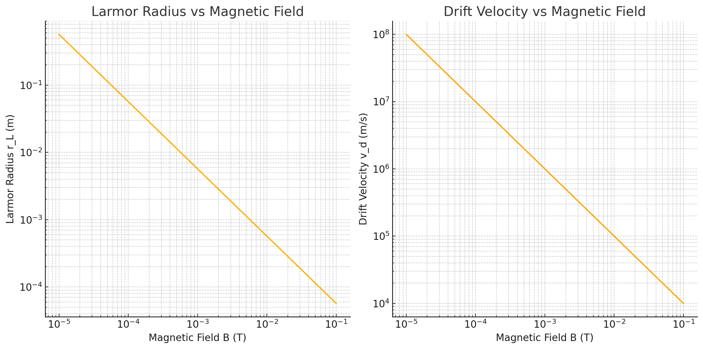
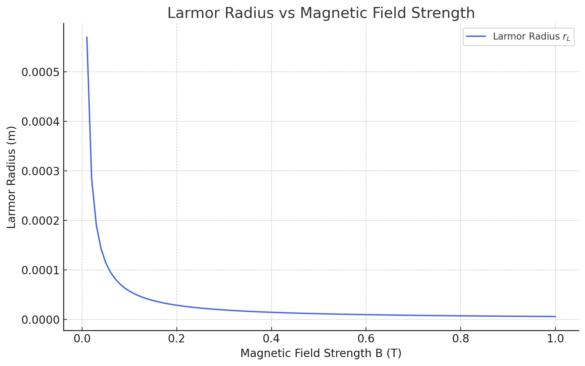

Problem 1 - Simulating the Effects of the Lorentz Force
1. Circular and Helical Trajectories
These plots demonstrate how a charged particle moves in a magnetic field: - Circular motion when velocity is perpendicular to B. - Helical motion when velocity has a component along B. - Helical drift when combined with electric field.

2. 3D Trajectory under Crossed Fields
This plot shows the full 3D trajectory of a particle in crossed E and B fields.

3. Trajectories under B, E, and E×B
Three different configurations are compared: - Only magnetic field (circular) - Only electric field (linear) - Both fields (drift)

4. Particle Drift under E ⊥ B
This 2D plot shows the particle path under perpendicular electric and magnetic fields. 
5. Circular Trajectory in Uniform Magnetic Field
A clear circular path is formed due to Lorentz force.

6. Larmor Radius and Drift Velocity (Log-Scale)
These plots illustrate: - Left: Larmor radius shrinking as B increases. - Right: Drift velocity dropping with increasing B.

7. Larmor Radius vs Magnetic Field (Linear Scale)
Illustrates how Larmor radius behaves in low- to high-B regions.

8. Drift Velocity vs Magnetic Field (Linear Scale)
Shows the relationship between drift velocity and magnetic field strength.